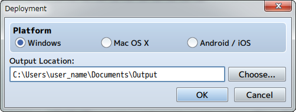

Output Formats
Deployment

Exports the deployment package for each platform. It is possible to output to Windows, Mac OS X, Android and iOS.
- Windows
- The exported game folder will be deployed.
Please read [Using Enigma Virtual Box] when wanting to package the game folder and distribute only the .exe file. - Mac OS X
- Distributes the exported game folder or the Game.app file inside the game folder.
* Game.app will be displayed as a folder in a Windows environment, but you can run this as an application in a Mac OS X environment. - Android/iOS
- Please view [Converting to an Android App] and [Converting to an iOS App].
- Web Browsers（March 1st, 2016 Update）
- You can run your game on a web browser by uploading your exported project folder to a web server.
- Gameplay System Requirements
-
System Requirements Environments which support HTML5 Canvas and Web Audio API
iOS 8 or higher
Android 4.4 or higherRecommended Environments Windows, Android: Google Chrome
Mac OS X, iOS: Safari* Please use Wi-Fi when playing using a browser on a smartphone.
* A browser that supports WebGL is recommended for gameplay.
Options [Exclude unused files] （March 1st, 2016 Update）
Check off the box under Options in the Deployment window to exclude unnecessary files for publishing. By using this function, you are able to reduce the size of the package you plan to publish.
Files that will be excluded will be unnecessary files contained in the following folders.
- Project Folder/img/(unnecessary files in this folder)
- Project Folder/audio/(unnecessary files in this folder)
Please go to [[Exclude unused files] Plugin Configuration]to see how to make adjustments to the plugin.